Passo1
Posizionare i fianchi
Posizionare i due fianchi (F1) in maniera speculare.
- F1Fianchi×2
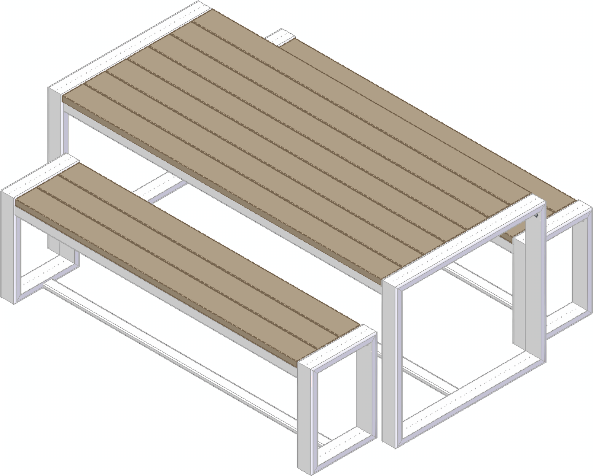
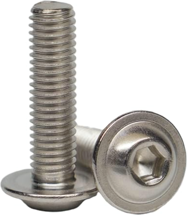
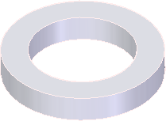
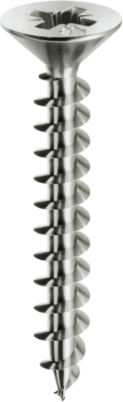
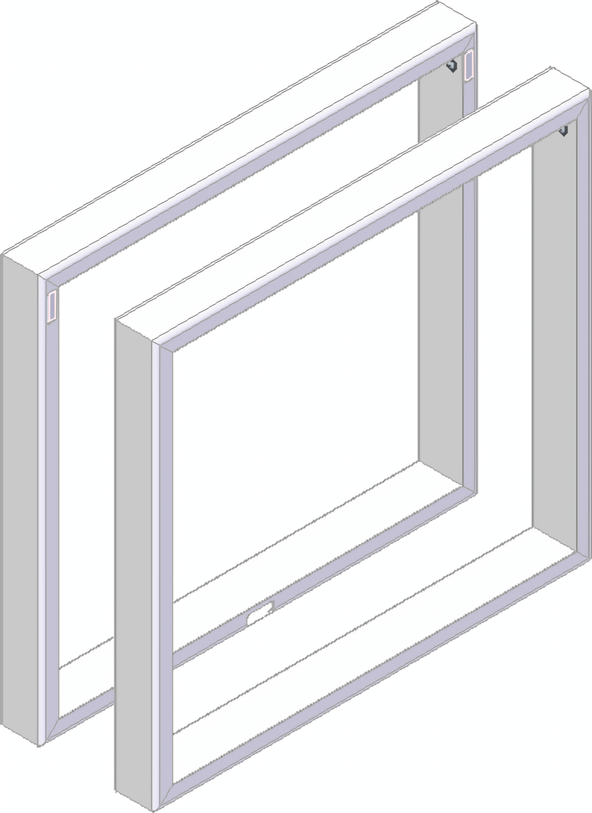
Fianchi tavolo in alluminio con asole
×2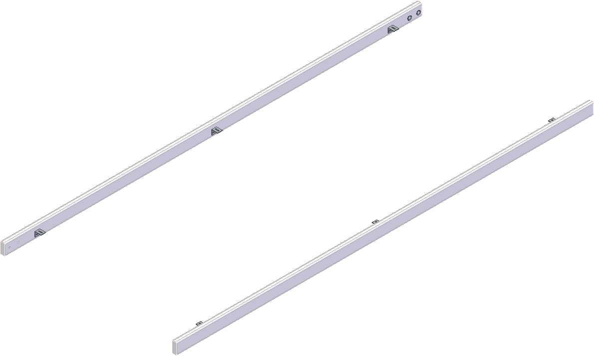
Traversi superiori di giunzione dei fianchi
×2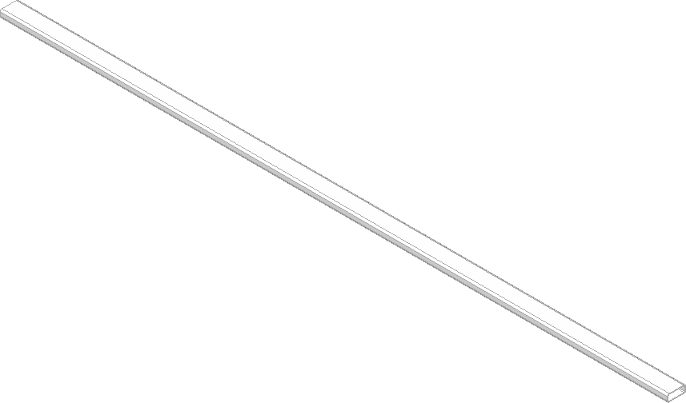
Traverso inferiore di giunzione dei fianchi
×1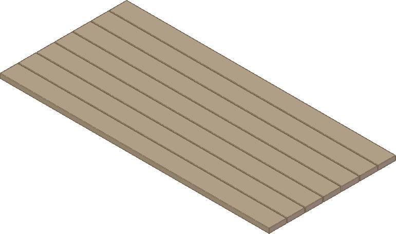
Piano tavolo a doghe in legno
×1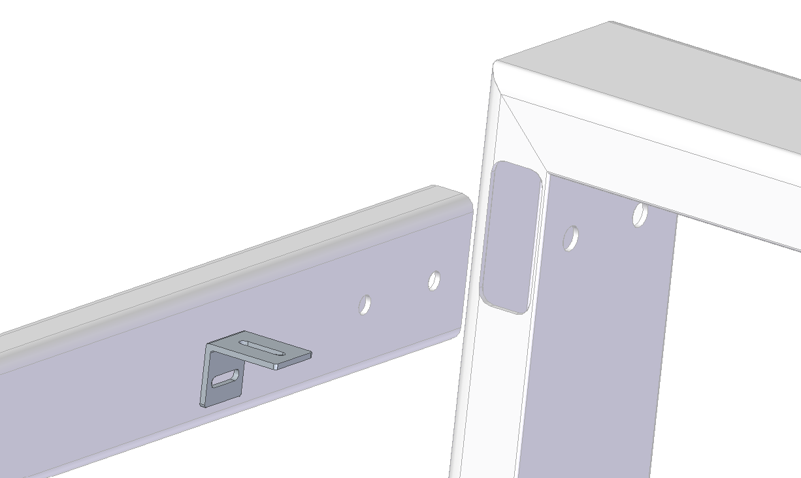
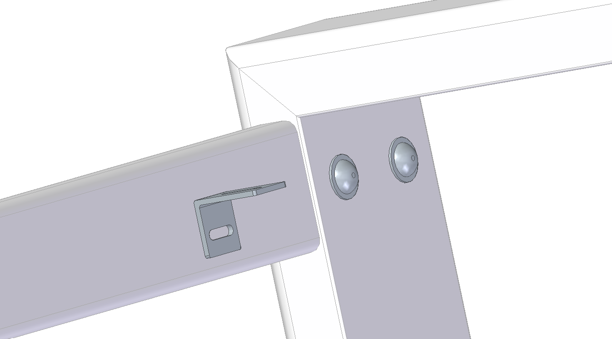
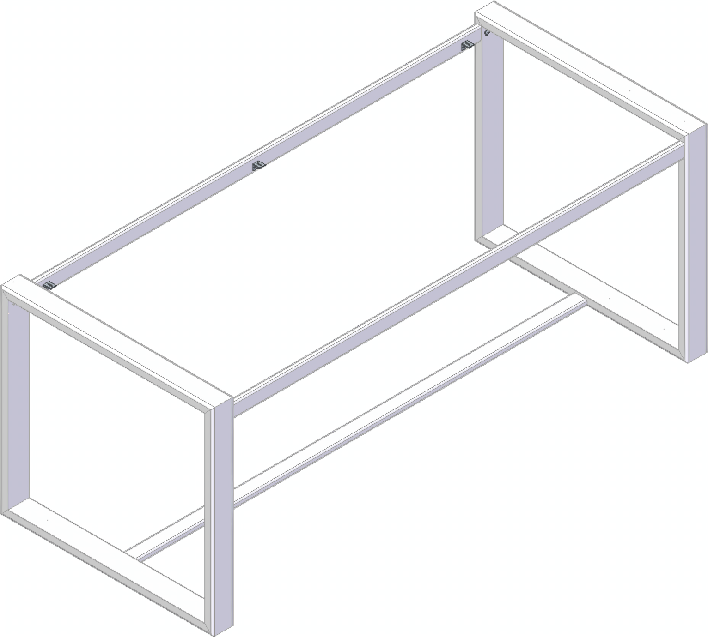
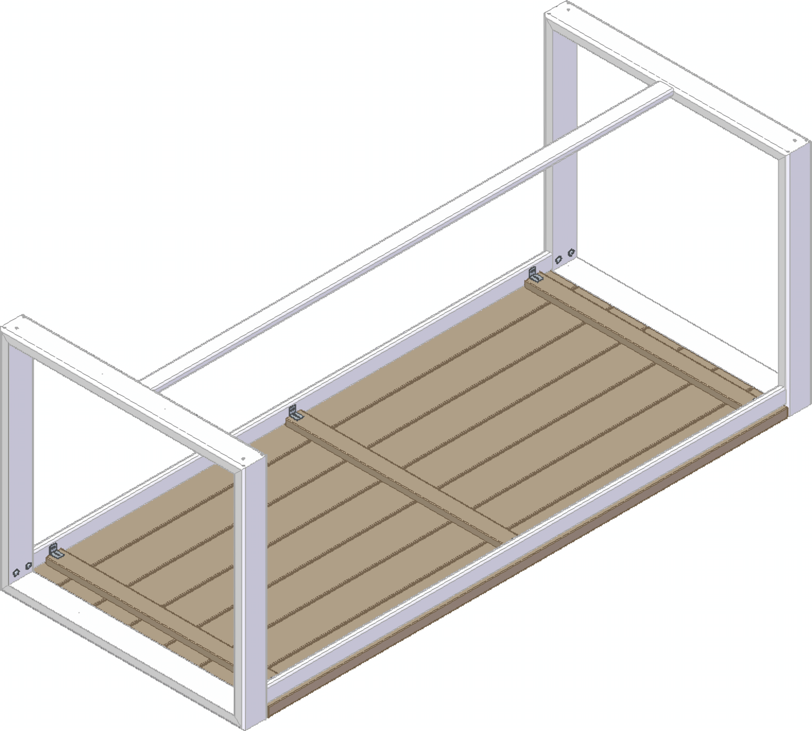
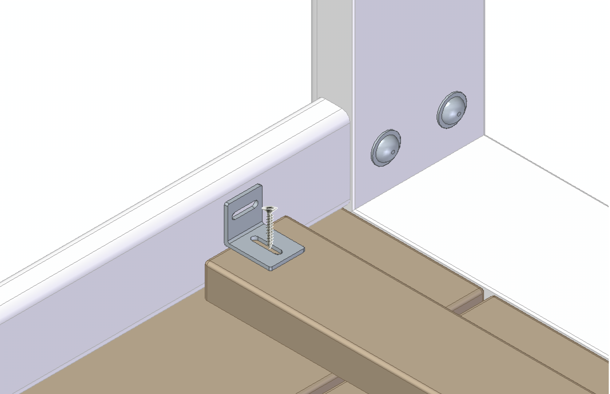
Posizionare i due fianchi (F1) in maniera speculare.
Inserire i traversi di giunzione (T1) nelle apposite asole presenti sui montanti dei fianchi (F1), con gli angolari per il fissaggio del piano direzionati come mostrato in figura.
Una volta posizionato correttamente il traverso (T1) nella sede e fatti combaciare i fori, procedere all’avvitatura delle viti fornite, con la rondella in nylon sottotesta, senza serrarle.
Ripetere lo stesso procedimento per entrambi i traversi di giunzione (T1).
Per il traverso inferiore (T2) utilizzare lo stesso procedimento di montaggio, assicurandosi di inserire il traverso nell’asola inferiore del fianco spingendolo fino in fondo, per utilizzare il foro di serraggio più interno.
Al termine delle procedure precedenti si avrà l’articolo nella forma mostrata in figura.
A questo punto dell’assemblaggio, procedere con il serraggio delle 10 viti precedentemente avvitate.
Posizionare la struttura in alluminio sul piano a doghe in legno (P1), cercando di allineare al meglio piano e struttura.
Successivamente avvitare le viti da legno fornite per accoppiare il piano con la struttura in alluminio, posizionandole nelle asole presenti sugli angolari rivettati ai traversi di giunzione (T1), come in figura.
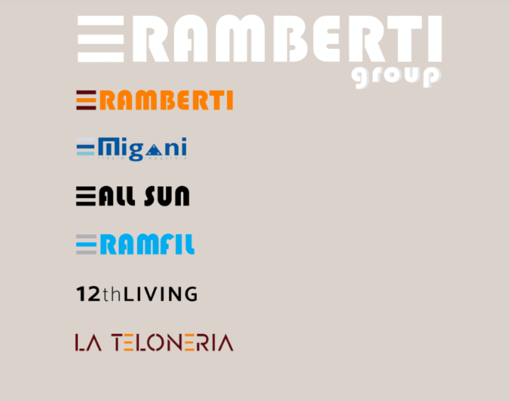